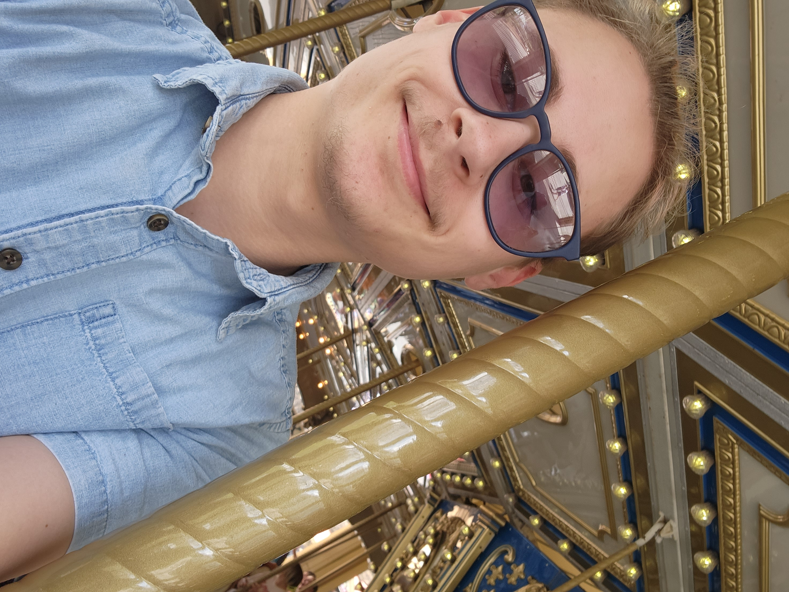

About Mixter Olly Davis

Mixter Olly Davis is a multifaceted creator, author, and former computer science educator based in South Jersey. As the creative mind behind The Tides of Rodentia, they weave intricate worlds that bridge the gap between immersive literature and interactive experiences.
Beyond the pages of the Rodentia archipelago, Olly is the architect of the fully developed constructed language Tesahoda. Their passion for world-building heavily influences their work across multiple mediums, from self-published fiction to designing custom tabletop roleplaying and trading card games through TwoPart Trading.
When they aren't writing, formatting books for KDP, or coding custom web applications, Olly enjoys a variety of hands-on creative pursuits—from practicing freehand line art tattoo design to crocheting quick projects. They currently reside in Blackwood, New Jersey, where they spend their downtime exploring local nature trails, gaming, and relaxing with their husband, Joseph, and their two cats, Olive Oyl and Zola.